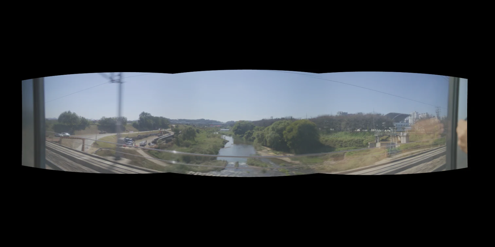
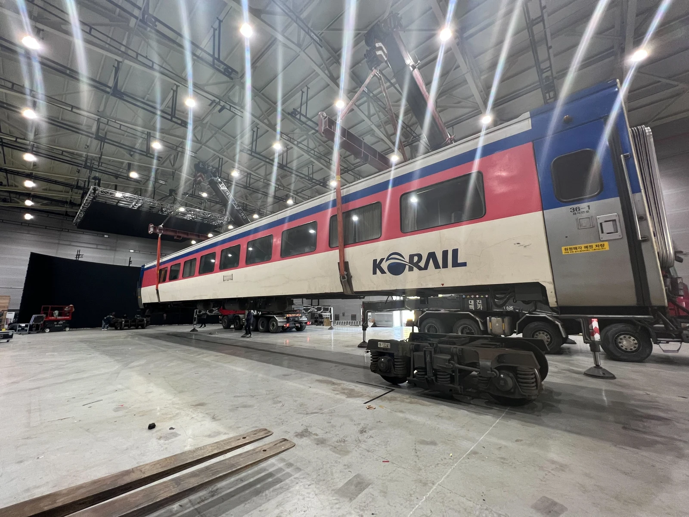

D.P. 시즌 2
열차 장면 촬영을 위한 실사 배경 소스와 Unreal Engine 터널 환경을 제작했다. 실사 소스는 촬영과 스티칭을 거쳐 LED 배경으로 사용했다. 터널은 구간이 계속 이어지도록 Blueprint를 구현해 ICVFX 촬영 현장에서 대응했다.
1. 열차 창밖 소스 촬영과 스티칭
KTX 창문에 카메라 세 대를 부착해 창밖 풍경을 촬영했다. 촬영 전 곡률과 카메라 각도, LED 설치 각도를 계산하고, 이를 바탕으로 촬영과 스티칭을 진행했다.


2. 계속 이어지는 터널 구현
열차가 터널 안을 계속 달리는 장면을 위해 Unreal Engine으로 터널 한 구간을 제작했다.
이 구간을 이용해 Blueprint에서 터널이 반복되도록 구성했다. 카메라는 고정한 채 터널 3세트를 왼쪽으로 이동시키고, 동시에 오른쪽에 새로운 터널 3세트를 생성해 뒤따라오게 했다. 카메라 시야를 벗어난 터널은 삭제하며, 이 과정을 반복해 터널이 계속 이어지도록 했다.
현장에서 조절할 수 있도록 터널의 이동 속도와 조명 간격을 파라미터로 노출했다.
메이킹

